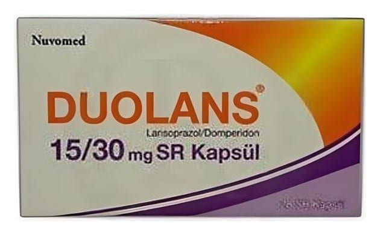

Duolans 15/30 mg SR Kapsül, 28 Adet

Ne için kullanılır
KT · Bölüm 1DUOLANS SR kapsül, renksiz şeffaf gövde, kırmızı renkli şeffaf kapak içerisinde kirli beyaz ve sarıdan açık sarıya doğru renkli küreler şeklindedir. DUOLANS 28 SR kapsül, PVC/PVDC blister ambalaj içerisinde piyasaya sunulmaktadır. DUOLANS, proton pompa inhibitörü olarak sınıflandırılan ilaç grubuna ait lansoprazol ve propulsifler adı verilen ilaç grubuna ait domperidon isimli iki etkin maddeyi içermektedir. Proton pompası inhibitörleri mide tarafından salgılanan asit miktarını düşürür. Propulsif ilaçlar mide ve bağırsak hareketlerini arttırarak düzenlerler. Böylelikle midenin boşalması kolaylaştırılmış olur ve midenin geriye, yemek borusuna doğru faaliyet göstermesi engellenir. DUOLANS, aşağıda belirtilen durumların tedavisinde kullanılır: Gastroözofageal reflü (mide içeriğinin kusma ya da zorlama olmaksızın yemek borusuna geri kaçması) ve özofajitle (yemek borusu iltihabı) birlikte bulunan dispeptik semptom kompleksi (rahatsızlık hissi, şişkinlik ve erken doymayı içeren belirtiler) tedavisinde kullanılır.